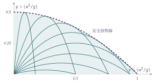

STEP II 2014、第10問
先に進む前に問題を読んでおこう。問題は STEP Support Programme の問題データベースにある： step.maths.org/questions/14-s2-q10
導入
ある噴水が、あらゆる方向に同じ速さで水を噴き出しているとする。水の筋はきらめくドームをつくり、その外縁はくっきりしている。内側ではどの点にも水が通過し、外側にはまったく届かない。この縁は放物線であり、安全放物線（parabola of safety）とよばれる。その外側にある標的には、与えられた初速の大砲では、どの角度で撃っても命中させられないからである。
驚くべきことに、この境界はそれ自体が軌道（trajectory）の一つではない。それは軌道全体の族の包絡線（envelope）、すなわちどの軌道にもちょうど一度ずつ接する曲線であり、第 8.1 節 で直線 \(y = 0\) が放物線の族に接していたのとまったく同じ状況である。この問題では、二次式（quadratic）の判別式（discriminant）だけを用いてこの曲線を求める。
取りかかる前に
\(x\) と \(y\) を \(t\) で表し、\(t\) を消去せよ。\(\sec^2\theta\) を \(\lambda = \tan\theta\) を用いてどう表せるか。
\(x = ut\cos\theta\)、\(y = ut\sin\theta - \frac12gt^2\) に \(t = \frac{x}{u\cos\theta}\) を代入すると、\(\sec^2\theta = 1 + \tan^2\theta\) を用いて \[y = x\tan\theta - \frac{gx^2}{2u^2\cos^2\theta} = \lambda x - \frac{gx^2}{2u^2}(1 + \lambda^2),\] を得る。
順を追って解く
段階 1 \(x\) を固定して角度を動かす
固定した \(x > 0\) に対して、\(y\) を \(\lambda\) の関数とみなせ。それはどのような関数か。\(\lambda\) がすべての実数を動くとき、\(y\) はどのような値をとるか。
\(x\) を固定すると、\(y\) は最高次の係数が負の値 \(-\frac{gx^2}{2u^2}\) である \(\lambda\) の二次関数であり、\(\lambda\) についての上に凸な放物線となる。これは最大値をもち、\(\lambda \to \pm\infty\) のとき \(y \to -\infty\) である。連続であるから、最大値以下のすべての値をとる。最大となるのは \(\frac{\mathrm{d}y}{\mathrm{d}\lambda} = x - \frac{gx^2}{u^2}\lambda = 0\)、すなわち \(\lambda = \frac{u^2}{gx}\) のときであり、そこでは \[Y = \frac{u^2}{gx}\,x - \frac{gx^2}{2u^2}\Bigl(1 + \frac{u^4}{g^2x^2}\Bigr) = \frac{u^2}{2g} - \frac{gx^2}{2u^2}. \qed\] である。（同じことを言い換えると、点 \((x, y)\) に到達できるのは、二次方程式 \(\frac{gx^2}{2u^2}\lambda^2 - x\lambda + \frac{gx^2}{2u^2} + y = 0\) が実数解 \(\lambda\) をもつときであり、かつそのときに限る。判別式の条件から \(y \leq Y\) が得られる。）
段階 2 領域
曲線 \(Y = \frac{u^2}{2g} - \frac{gx^2}{2u^2}\) は上に凸な放物線であり、その頂点（vertex）\(\bigl(0, \frac{u^2}{2g}\bigr)\) は真上に撃ったときに到達する高さである。また、この放物線は \(x = \pm\frac{u^2}{g}\)、すなわち最大到達距離のところで地面と交わる。この曲線上またはその下側（かつ地面より上）にあるすべての点には到達でき、曲線より上側の点にはどれも到達できない（図 11.9.1）。
曲線より真に下側にある点を通る軌道はいくつあるか。曲線上の点ではどうか。
曲線より下側の点は、\(\lambda\) についての二次方程式が異なる二つの実数解をもつ場合に対応する。すなわち、高い弾道と低い弾道の二つの発射角がある。曲線上の点は重解に対応する。すなわち軌道はちょうど一つであり、その軌道はその点で曲線に接する。

段階 3 最も遠い点
\(O\) から最も遠い到達可能な点（地面上または地面より上）は境界上にある。距離の 2 乗 \(x^2 + Y^2\) を \(x^2\) の関数として表せ。それは増加するか、減少するか。
\(X = x^2\) とおく。すると \[x^2 + Y^2 = X + \Bigl(\frac{u^2}{2g} - \frac{gX}{2u^2}\Bigr)^2, \qquad \frac{\mathrm{d}}{\mathrm{d}X}(x^2 + Y^2) = 1 - \frac{g}{u^2}\Bigl(\frac{u^2}{2g} - \frac{gX}{2u^2}\Bigr) = \frac12 + \frac{g^2X}{2u^4} > 0.\] である。よって境界に沿って外側へ進むほど距離は増加し、最も遠い点は境界が地面と交わる点 \(x = \frac{u^2}{g}\) である。最大距離は \[\frac{u^2}{g},\] であり、これは \(45^\circ\) で撃つ通常の最大到達距離の弾道によって実現される。■
振り返り
問いを逆転させる。与えられた軌道がどこを通るかを問うのではなく、与えられた点をどの軌道が通るかを問う。
パラメータについての二次式。各点について、\(\lambda = \tan\theta\) についての方程式は二次方程式であり、その判別式によってその点に到達できるかどうかが決まる。
二つ、一つ、またはゼロ。内側の点には二つの角度で、境界上の点には一つの角度で到達でき、外側の点にはどの角度でも到達できない。
背後にある数学
包絡線
1 パラメータの曲線族 \(\mathrm{F}(x, y, \lambda) = 0\) は、しばしば包絡線、すなわち族のすべての曲線に接する曲線をもつ。包絡線は \(\mathrm{F} = 0\) と \(\frac{\partial\mathrm{F}}{\partial\lambda} = 0\) を連立させて解くことで求められ、これはまさに \(y\) を \(\lambda\) について最大化することで行ったことである。包絡線は科学のいたるところに現れる。コーヒーカップの表面に見える明るい光の曲線は反射光線の包絡線であり、火線（caustic）とよばれる。超音速機のソニックブームは、機体が発する音波の包絡線であるマッハ円錐（Mach cone）によって運ばれる。そして 第 8.1 節 では、微分方程式の解の族の包絡線がそれ自体解、すなわち「特異」な解であった。
焦点
安全放物線には注目すべき性質がある。その焦点（focus）は発射点 \(O\) なのである。（放物線 \(y = c - \frac{x^2}{4c}\) の焦点は原点であり、ここでは \(c = \frac{u^2}{2g}\) である。）各軌道もまた放物線であり、すべての軌道の焦点は \(O\) を中心とする半径 \(\frac{u^2}{2g}\) の円周上にある。これにはエネルギーによる説明がある。高さ \(y\) における物体の速さは \(\sqrt{u^2 - 2gy}\) であり、これは準線（directrix）の高さ \(\frac{u^2}{2g}\) でゼロになる。そして、準線が同じ直線であり、かつ \(O\) を通る放物線の焦点は、その円周上にあるのである。
ガリレオ（Galileo）は 1609 年ごろ、投げられた物体が放物線を描いて運動すること、そして水平な地面での最大到達距離は \(45^\circ\) で得られることを示した。彼の弟子で、気圧計の発明者としてよく知られるエヴァンジェリスタ・トリチェリ（Evangelista Torricelli）は、1644 年に著書 De motu gravium において安全放物線を発見した。砲手にとって、これは「そもそもどの標的が射程内にあるのか」という実際的な問いに答えるものであった。トリチェリはまた、与えられた点を通る軌道は対になって現れ、その角度はその点の方向と鉛直方向に関して対称であること、すなわちこの問題における高い弾道と低い弾道であることも示した。
思考のスキル
曲線族が覆う領域の境界を求めるには、一点を固定し、どのパラメータの値に対して曲線がその点を通るかを問えばよい。境界とは、解の個数が変化するところである。
点を動かしながら解の個数を数えるという同じ考え方は、光学における火線の研究、力学系における分岐（bifurcation）の研究、そして方程式の解の個数がどのように変化しうるかを分類するカタストロフィー理論（catastrophe theory）の基礎となっている。
次の一歩
爆発する花火。STEP II 2023、第10問 （OCRが配布している2023年の問題一式、zipファイル） に挑戦せよ。この問題では、爆発で飛び散る粒子を、中心が自由落下する球面とみなし、安全放物面（paraboloid of safety）に沿って動く粒子を求める。
斜面に向かって撃つ。角度 \(\beta\) で傾いた斜面に沿って上向きに、速さ \(u\) で物体を投げるときの最大到達距離を求めよ。（ヒント：直線 \(y = x\tan\beta\) は安全放物線とどこで交わるか。）最適な角度は、斜面と鉛直方向のなす角を二等分することを示せ。
二つの角度。点 \(P\) に到達する二つの角度は、\(OP\) と鉛直方向のなす角の二等分線に関して対称であることを示せ。
焦点。角度 \(\theta\) の軌道の焦点が \(\bigl(\frac{u^2}{2g}\sin2\theta, -\frac{u^2}{2g}\cos2\theta\bigr)\) であることを示し、これより焦点が \(O\) を中心とする円周上にあることを示せ。
さらに学ぶために
David Morin, Introduction to Classical Mechanics（Cambridge University Press、古典力学入門）の第 3 章。軌道の包絡線について論じている。
J. W. Bruce, P. J. Giblin & C. G. Gibson, “On caustics of plane curves”, American Mathematical Monthly 88 (1981)。幾何学における包絡線と火線について。
E. H. Lockwood, A Book of Curves（Cambridge University Press、曲線の本）。包絡線、火線、そして多くの古典的な曲線を、その作図法とともに扱っている。